Code Snippets
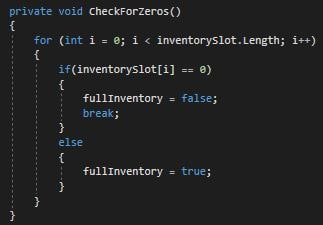
Check for zeros
This code snippet is for finding if there are anyzeros within an array.
Here we can see that I used it for a limited inventory.
We run a for loop from start to finish as long as there are no zeros.
If there are any zeros we break the loop because
all we were checking for if there were any zeros to begin with.
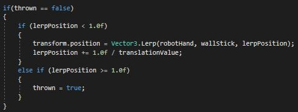
Lerp
This code snippet is for when I was understanding lerp.Essentially this will make an object go from
point A to point B in a linear fashion.
In this example I had a plunger object move and not have
to check the inner "if" statements if "thrown" was true.
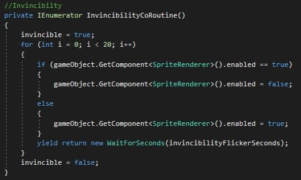
Invincibility
This code snippet is for when I was handling invincibilityand needed a way to indicate that the player was invincible.
For this I used an IEnumerator and had
the player's sprite flicker after they got hit by an enemy.
This lets the player know that after they got hit they have
time to get away before getting hit again.
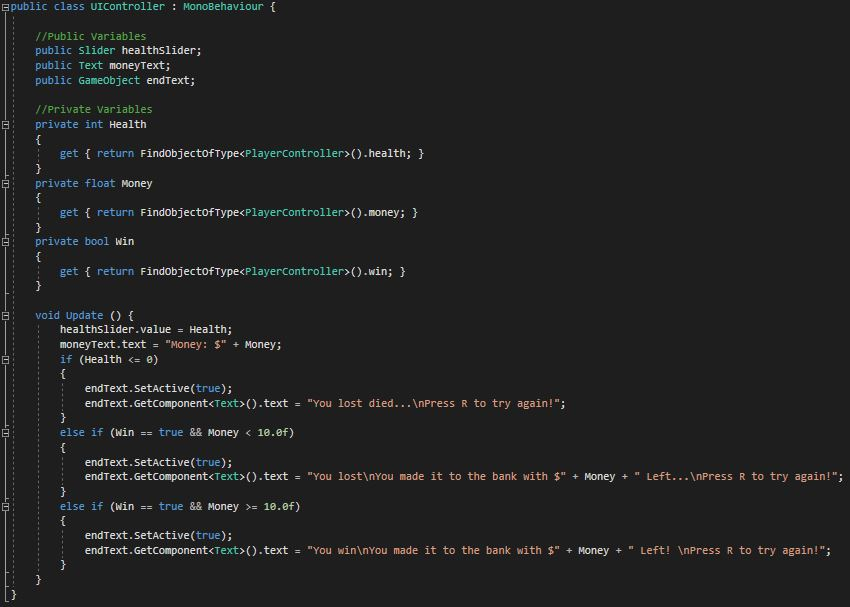
UI Controller
This code snippet is for when I needed to display various win conditions,how much money the player had left, and their health.
To get the data to correctly display information,
I used get and set to gather data from the player.
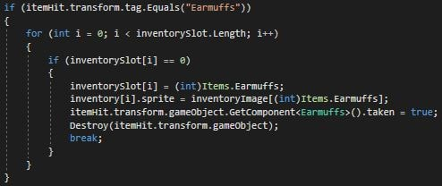
Pick up item
This code snippet is for when I needed to have the playerpick up various items and change the slot
in their inventory with the correct data.
I first check beforehand if there is any space in the inventory
using "Check for zeros" and then place
the item in the first empty spot available.
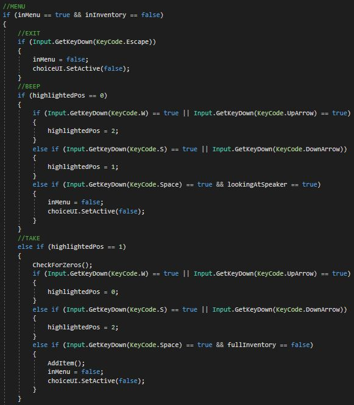
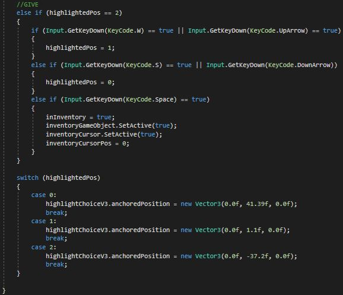
Menu
This code snippet is for when I needed have a menuin which the player chooses from a set amount of options.
I used a switch to handle the position of the highlighter,
which hovers over the players current option.
Depending on what option is highlighter, the player can
then press up or down to change it to the next or previous option.
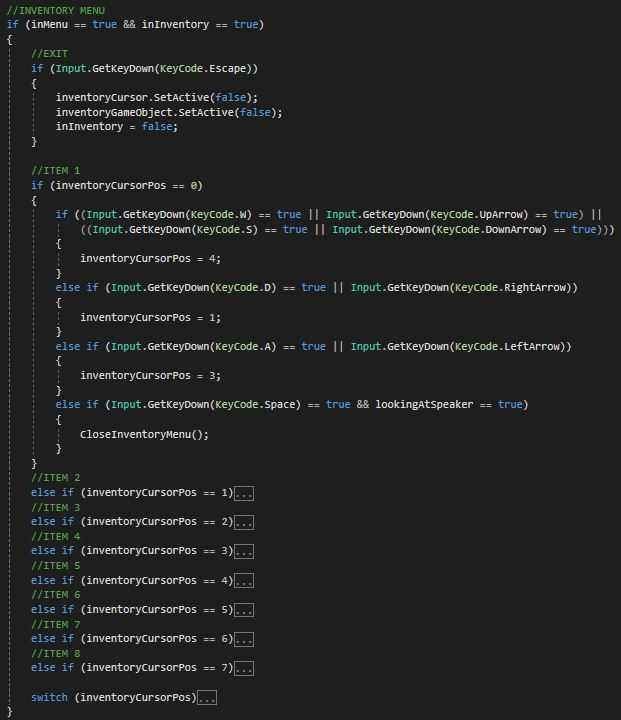
Hard coded inventory
This code snippet is for when I needed to havean inventory to store the players items.
This is a hard coded 2 by 4 inventory,
however it can be modified easily within the code.
This uses a very similar format as the Menu code.
The variable "inventoryCursorPos" is checked
by an NPC that is looking for a particular item.
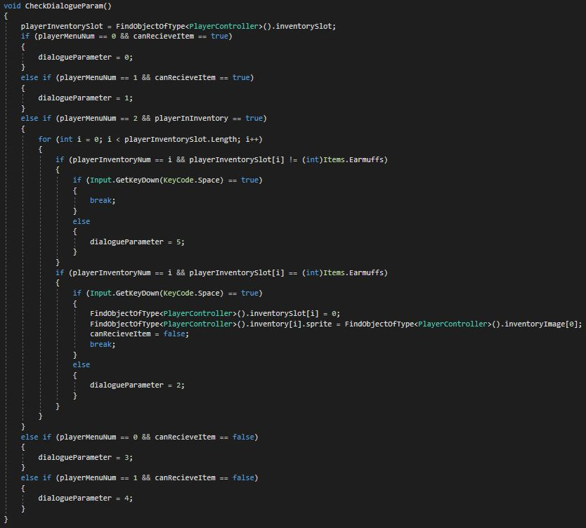
Check the dialogue parameter
This code snippet is for when I needed to change anNPC's dialogue based on what has happened in the game so far.
Within this code I also can change the item within the players inventory,
swapping it with either a new one or nothing.
I also have another variation that can take multiple items.
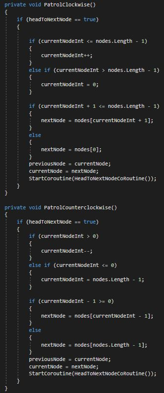
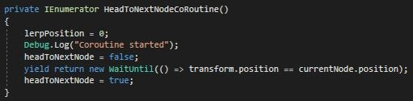
Patrol nodes
This code snippet is for when I needed enemies towalk around in a set pattern going from point A to point B.
Depending on the way the enemy is walking
they count the nodes up or down looping back
to the beginning and repeating.
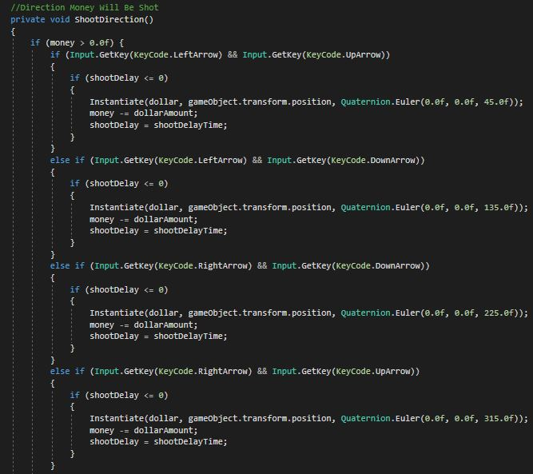
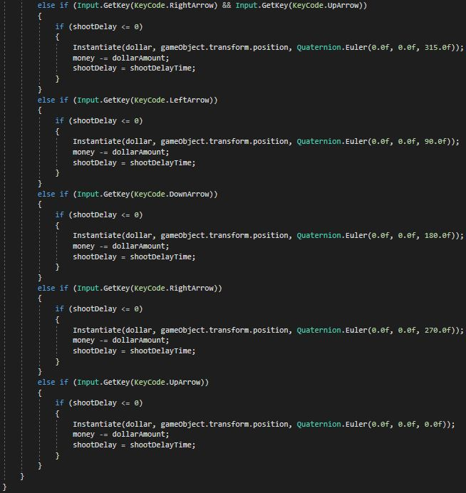
Shoot money (bullets) in cardinal directions
This code snippet is for when I needed to let the playershoot money (bullets), count them down and add a delay
so they couldn't shoot right away again.
Depending on the way the keys pressed the money
will shoot a different cardinal direction.
I now know how to improve this code,
by adding a method to hold the "if" statement
that is within the key input statement.
Thus, reducing lines and making it easier to read.
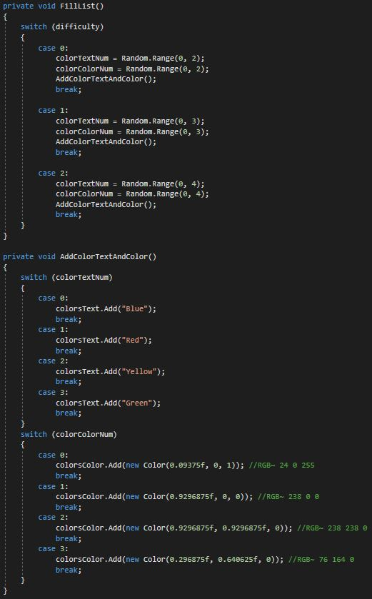
Fill list randomly
This code snippet is for when I needed fill two lists,one for strings, one for colors,
randomly dependant on the difficulty level.
This is for when the player has to choose the correct
color in order but not get messed up
by the color of the text.

Choose color coroutine
This code snippet is for when I needed to waitfor the user input of pressing a color button.
It loops through a for loop and if the most recently
tapped color is correct it continues
until there are no colors left.
If the user is correct for every color in the round,
the score goes up by one, the lists get empty
so they can get a new arrangement,
and lastly has a 1 in 3 chance of increasing
the amount of colors to memorize for the next round.
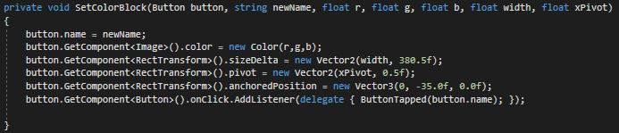
Set color block
This code snippet is for when I need to modifythe instantiated color blocks for the player
to press depening on the difficulty.

New direction and whether it is held or not
This code snippet is for when check whether or not thelast frame the input changed.
This is so I can get the most recent three inputs
if they have changed within a certain amount of frames,
which allows the player to do a quarter circle forward
and attack to throw a projectile.
Enemy combo
This code snippet is for a level 3 enemyin the fighting game mode of Dextra.
This allows the enemy to combo the player
if they are in the attack state
and are close enough to the player.
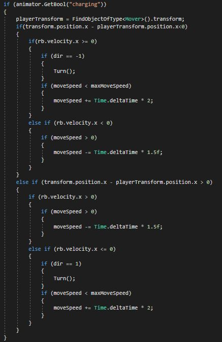
Turn around charge
This code snippet is for The platformer boss in Dextra.The boss charges at the player and turns around
if the player jumps over them.
This snippet tells the boss to slow down
and then speed up facing the
direction the player is at.
2022 Spencer Roccapriore